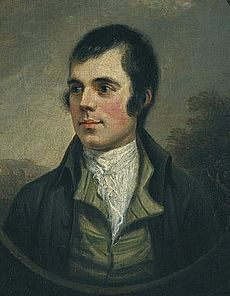

Article about Robert Burns
Robert Burns (25 January 1759 – 21 July 1796) (also known as Robbie Burns, Rabbie Burns, Scotland's favourite son, the Ploughman Poet, Robden of Solway Firth, the Bard of Ayrshire and in Scotland as The Bard) was a Scottish poet and lyricist. He is widely regarded as the national poet of Scotland and is celebrated worldwide. He is the best known of the poets who have written in the Scots language, although much of his writing is also in English and a light Scots dialect, accessible to an audience beyond Scotland. He also wrote in standard English, and in these his political or civil commentary is often at its bluntest.
He is regarded as a pioneer of the Romantic movement, and after his death he became a great source of inspiration to the founders of both liberalism and socialism, and a cultural icon in Scotland and among the Scottish Diaspora around the world. Celebration of his life and work became almost a national charismatic cult during the 19th and 20th centuries, and his influence has long been strong on Scottish literature. In 2009 he was chosen as the greatest Scot by the Scottish public in a vote run by Scottish television channel STV.
As well as making original compositions, Burns also collected folk songs from across Scotland, often revising or adapting them. His poem (and song) "Auld Lang Syne" is often sung at Hogmanay (the last day of the year), and "Scots Wha Hae" served for a long time as an unofficial national anthem of the country. Other poems and songs of Burns that remain well known across the world today include "A Red, Red Rose"; "A Man's A Man for A' That"; "To a Louse"; "To a Mouse"; "The Battle of Sherramuir"; "Tam o' Shanter"; and "Ae Fond Kiss".
Ayrshire
Alloway
Burns was born two miles (3 km) south of Ayr, in Alloway, South Ayrshire, Scotland, the eldest of the seven children of William Burnes (1721–1784) (Robert Burns spelled his surname Burnes until 1786), a self-educated tenant farmer from Dunnottar, The Mearns, and Agnes Broun (or Brown) (1732–1820), the daughter of a tenant farmer from Kirkoswald, South Ayrshire.
He was born in a house built by his father (now the Burns Cottage Museum), where he lived until Easter 1766, when he was seven years old. William Burnes sold the house and took the tenancy of the 70-acre (280,000 m2) Mount Oliphant farm, southeast of Alloway. Here Burns grew up in poverty and hardship, and the severe manual labour of the farm left its traces in a premature stoop and a weakened constitution.
He had little regular schooling and got much of his education from his father, who taught his children reading, writing, arithmetic, geography, and history and also wrote for them A Manual Of Christian Belief. He was also taught by John Murdoch (1747–1824), who opened an "adventure school" in Alloway in 1763 and taught Latin, French, and mathematics to both Robert and his brother Gilbert (1760–1827) from 1765 to 1768 until Murdoch left the parish. After a few years of home education, Burns was sent to Dalrymple Parish School during the summer of 1772 before returning at harvest time to full-time farm labouring until 1773, when he was sent to lodge with Murdoch for three weeks to study grammar, French, and Latin.
By the age of 15, Burns was the principal labourer at Mount Oliphant. During the harvest of 1774, he was assisted by Nelly Kilpatrick (1759–1820), who inspired his first attempt at poetry, "O, Once I Lov'd A Bonnie Lass". In the summer of 1775, he was sent to finish his education with a tutor at Kirkoswald, where he met Peggy Thompson (b.1762), to whom he wrote two songs, "Now Westlin' Winds" and "I Dream'd I Lay".